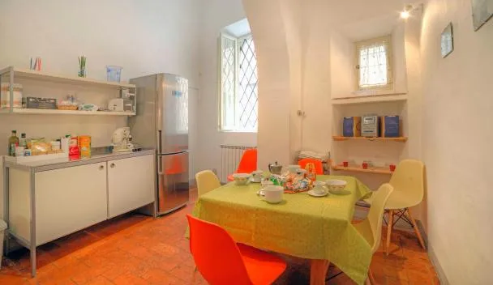
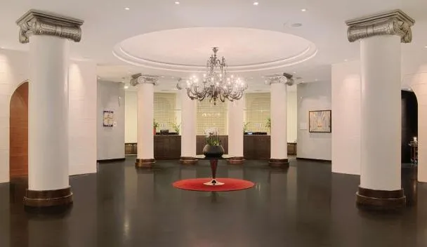
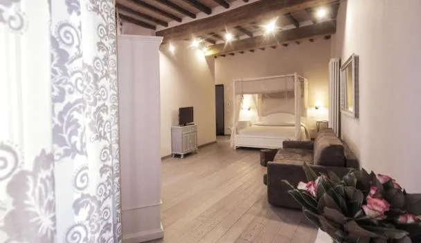
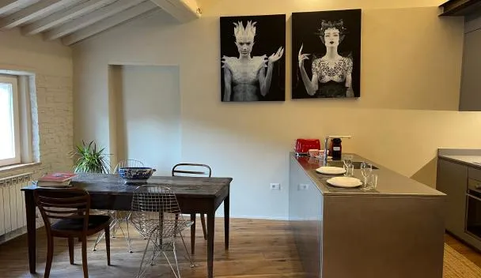
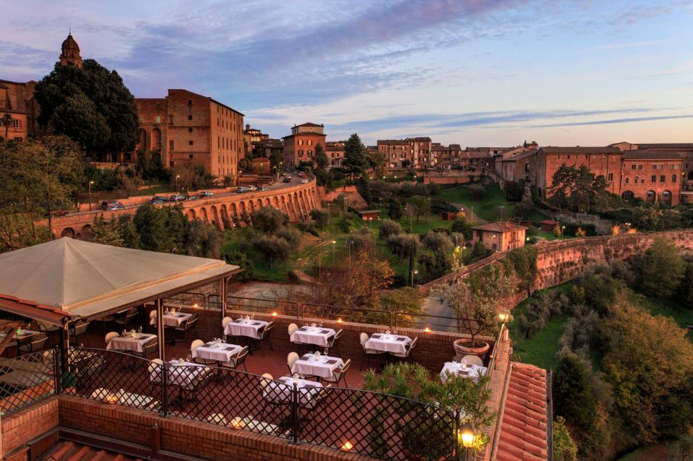
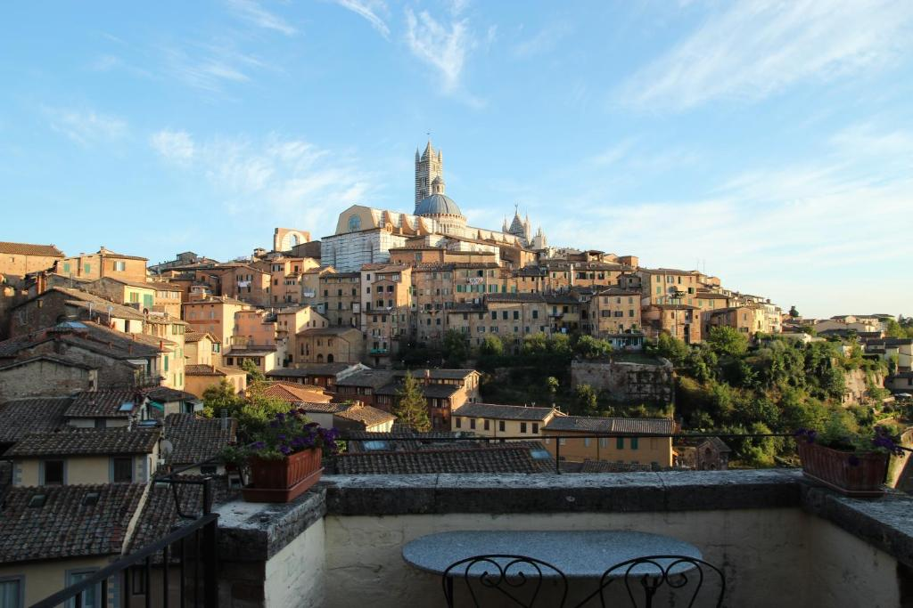
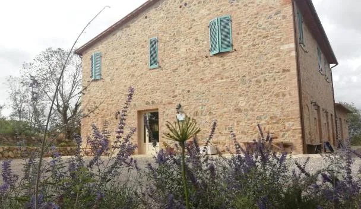
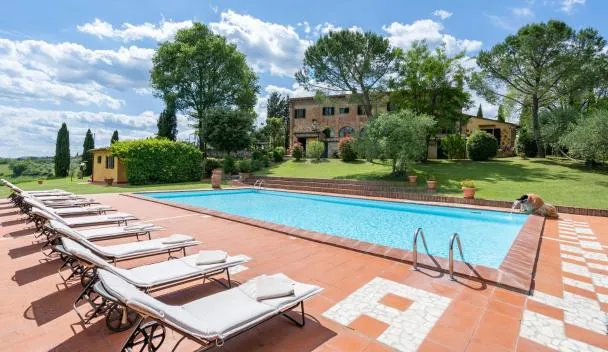

Where to stay · browser-verified
In the walls, or on a farm
The Siena trade-off in a nutshell: stay inside the walls — central, walkable, car-free, but (the old town being medieval) essentially no pools — or take a Val d'Orcia agriturismo with a pool, which needs a car but gives the kid a farm and a swim. All checked live for Jul 5–9, 2 adults + 1 child; prices are the four-night total.
🌅 For the most beautiful views: Siena's view-and-central champion that's actually available is Rick Steves' Hotel Athena (below) — a panoramic rooftop terrace and valley-view rooms, a pool, and ~10 min to the Campo. The legendary view in town is Campo Regio Relais, whose breakfast terrace frames a head-on, postcard view of the Duomo — but it's sold out for our dates (book direct if it opens). Most in-walls rooms look onto medieval lanes rather than a panorama, so request a "valley view" / "vista panoramica" room when you book.
Inside Siena's walls — walkable, car-free; book early

★ Top-rated value
Via Camollia 86 · north end of the old town
🍽️ Campo & restaurants — ~12-min walk; pici trattorias & gelato right en route
★ Best valueApartmentWalkable
A bright, modern self-catering apartment on the lively Via Camollia, a flat-ish walk down to the Campo — the highest-rated central pick, and the cheapest.
€516
from ~€129/nt · live 22 Jun
Apartment
(sleeps the family)

A real hotel
Piazza la Lizza 1 · by the Fortezza & bus hub
🍽️ Campo & restaurants — ~10-min walk; handy for day-trip buses too
Front deskHotelNear the bus hub
If you'd rather a proper hotel than a B&B or apartment — reception, breakfast, lifts — this chain hotel sits right by the Fortezza and the Piazza Gramsci buses (handy for day-trips).
€521
from ~€130/nt · live 22 Jun
Family room
(2A + 1 child)

Via Garibaldi 2 · in the old town
🍽️ Campo & restaurants — ~8-min walk to the heart of the dining
Value B&BCentral
A well-reviewed, central little B&B a short stroll from the Campo — simple, friendly and great value for a family inside the walls.
€466
from ~€117/nt · live 22 Jun
Family room

Via del Pignattello 12 · steps off the Campo
🍽️ Campo & restaurants — ~1–2 min · you're in the restaurant quarter ★
Best locatedGuesthouse
Just off Piazza del Campo — about as central as it gets, with characterful rooms; the splurge-ier of the in-town picks for the location.
€859
from ~€215/nt · live 22 Jun
Family room
Rick Steves' picks — his Siena hotels, availability checked
Rick Steves covers Siena warmly. We Playwright-checked every one of his picks live for your dates and family — and most of his beloved small places (Alma Domus, the Dominican-sisters' value pick; Hotel Duomo; Palazzo Ravizza; Antica Residenza Cicogna) are already sold out for Jul 5–9 with a child (they're tiny and book months ahead). Two of his are still bookable:

★ RS pick · has a pool
Via P. Mascagni · inside the walls
🍽️ Campo & restaurants — ~10-min walk; a panoramic restaurant on site too
★ Rick StevesPool ✓Walkable
The rare win: a Rick Steves hotel that's inside the walls AND has a pool (plus a panoramic terrace restaurant and parking) — solving Siena's pool-vs-walkable problem in one. A proper 4-star with family-friendly rooms.
Room for 3
(child welcome)

★ RS value pick
Via della Sapienza · in the old town
🍽️ Campo & restaurants — ~5-min walk; near Osteria Il Grattacielo
★ Rick StevesFamily-runTerrace
Steves' charming-cheap darling — a warm, family-run place in an 800-year-old house, famous for breakfast on the terrace in the Tuscan sun. A double that takes the 9-year-old; tremendous value and atmosphere.
€382
from ~€96/nt · live 22 Jun
Double + child
(book ahead)
A Val d'Orcia agriturismo — a pool & a farm, but you'll need a car

★ Pool · great value
Montenero d'Orcia · deep in the Val d'Orcia (car needed)
🍽️ Dining — on-farm meals + village trattorias a short drive; not walkable to Siena
★ PoolFarm stay9.6 rated
A beautifully-rated Tuscan farm stay with a pool and big valley views — the kid-friendly countryside option if you've got a car and want a swim after the hill towns.
€327
from ~€82/nt · live 22 Jun
Apartment / room
for the family

Pool · near Siena
Strada del Lucherino · ~3 km from Siena (short drive/bus)
🍽️ Restaurants — ~5-min drive / bus into the old-town dining (not a walk)
PoolClosest to Siena
The compromise: a pool property just outside Siena — close enough to nip into the city, but you'll want wheels or a taxi/bus for the door-to-Campo run.
€830
from ~€208/nt · live 22 Jun
Family room
The trade-off, plainly: inside the walls you're walkable and car-free but mostly pool-less; for a pool you move outside Siena and need a car (except Rick Steves' Hotel Athena above — walkable and a pool). Other Val d'Orcia farm stays with pools (all need a car): Antico Casale L'Impostino (9.1, ~€669) and Bosco Della Spina (9.1, ~€1,091). · ✅ Availability & prices refreshed 22 Jun 2026 via Playwright on Booking for Jul 5–9, 2 adults + 1 child (9): every hotel shown here was confirmed bookable; the Rick-Steves places marked "sold out" were checked and had no room for the family on these dates — book direct ASAP if you want one.